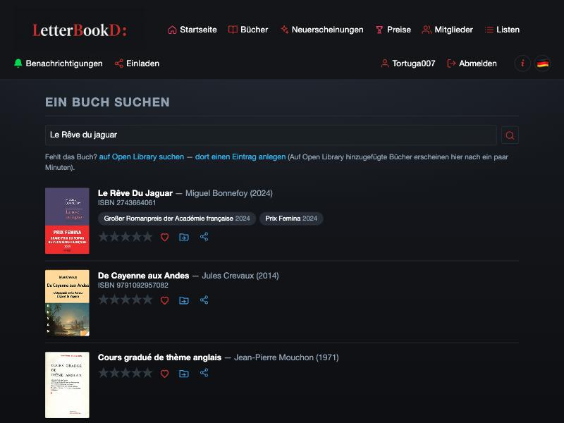

Bücher — Suche
Wozu es dient: Ein Buch im gemeinsamen Katalog deines Clubs finden. Fehlt das Buch, kannst du es über Open Library vorschlagen; es erscheint wenige Minuten später im Katalog.

Ablauf
Gib den Anfang eines Titels, einen Autorennamen oder eine ISBN in das Suchfeld ein und drücke die Eingabetaste (oder klicke auf die Lupe). Beispiel: „Le Rêve du jaguar“ liefert die Karte mit dem Prix Femina und dem Grand prix du roman de l’Académie française 2024.
Fehlt das Buch, folge dem Link „Bei Open Library suchen“ und danach „Dort einen Eintrag anlegen“. Open Library übernimmt den Eintrag innerhalb weniger Minuten in letterbookd.
Aktionsketten
Jede Zeile beschreibt einen Auslöser in der Oberfläche, das sich öffnende Modal/Formular und den erzielten Effekt.
| Auslöser | Modal / Felder | Effekt |
|---|---|---|
| Suchfeld | Ein Textfeld (Titel, Autor oder ISBN). Absenden: Eingabetaste oder Klick auf die Lupe. | Lädt die Seite mit den passenden Ergebnissen neu. Die URL enthält den Parameter „?q=…“, damit du die Suche teilen kannst. |
| Link „Bei Open Library suchen“ / „Dort einen Eintrag anlegen“ | Formular bei Open Library (außerhalb von letterbookd). | Legt einen Eintrag bei Open Library an; letterbookd übernimmt ihn innerhalb weniger Minuten. Ein Neuladen der Suche zeigt das neue Buch an. |
| Herz-Symbol (Ergebniszeile) | — | Fügt das Buch deiner Systemliste „Favoriten“ hinzu bzw. entfernt es. |
| Ordner-Symbol (Ergebniszeile) | Öffnet das Modal „Zu einer Liste hinzufügen“ (siehe unten). | Fügt das Buch der gewählten Liste oder einer spontan angelegten neuen Liste hinzu. |
| Teilen-/Dreieck-Symbol (Ergebniszeile) | Öffnet das Modal „Dieses Buch vorschlagen“. | Sendet einen privaten Vorschlag an ein Mitglied deines Clubs, optional mit einer Nachricht (max. 280 Zeichen). |
| Graue Sterne (Ergebniszeile) | Ein Klick auf die Sterne öffnet das vollständige Bewertungsformular auf der Buchseite. | Leitet zur Buchseite weiter, wo deine Bewertung erwartet wird. |